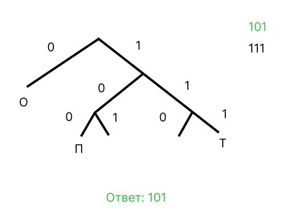

<html lang="ru">

</html>

<head>
    <meta charset="UTF-8">
    <meta name="viewport" content="width=device-width, initial-scale=1.0">
    <link href="https://stackpath.bootstrapcdn.com/bootstrap/4.5.2/css/bootstrap.min.css" rel="stylesheet">
    <link href="https://fonts.googleapis.com/css2?family=Fira+Code:wght@400&display=swap" rel="stylesheet">
    <title>Статья</title>
    <link href="styles.css" rel="stylesheet">
</head>

<body>

    <div class="container">
        <h1 align="center">Условие Фано</h1>
        <p>
            Что такое информация?
        <div class="important-red">
            Информация – это сведения, которые могут быть представлены в различной форме, доступной для обработки
            человеком или
            специальным устройством.
        </div>
        </p>

        <p>
            А вот представление информации в различной форме и называется кодированием. В компьютерах информация
            кодируется с помощью 0 и 1, но
            тут возникает нюанс... Допустим, мы хотим закодирвоать буквы А, Б, В. Тогда букву А можно закодировать как
            0, букву Б как 1, а букву
            В как 10, но тогда как раскодировать сообщение 1010? Как БАБА или как ВВ? Так вот для того, чтобы всегда
            можно было раскодировать
            слово одинаково и применяется условие Фано.
        <div class="important-red">
            Никакое кодовое слово не может быть началом другого кодового слова.
        </div>
        Рассмотрим задачку:
        <div class="important-yellow"> По каналу связи передаются сообщения, содержащие только четыре буквы: П, О, С, Т;
            для передачи используется двоичный код, допускающий однозначное декодирование. Для букв Т, О, П используются
            такие кодовые слова: Т: 111, О: 0, П: 100. Укажите кратчайшее кодовое слово для буквы С, при котором код
            будет допускать однозначное декодирование. Если таких кодов несколько, укажите код с наименьшим числовым
            значением.</div>
        </p>


        <p>
            Решение:
            
        </p>
        <p>
            Конечно мы рассмотрели лишь самую простую задачу, но по-сути все остальные содержат два подвоха:
        <ol>
            <li>Если в условии задачи сказано - необходимо закодировать все буквы русского/латинского алфавита
                нужно
                учесть, что
                необходимо оставить одну свободную ветвь для букв, которые не используются в задаче.</li>
            <li>
                Если необходимо закодировать слово с повторяющимися буквами, то НАИМЕНЬШИМ кол-вом симолов кодируем
                букву, которая встречается ЧАЩЕ всего. При этом необходимо рассмотреть все варианты
            </li>
        </ol>
        </p>
    </div>

    <script src="https://code.jquery.com/jquery-3.5.1.slim.min.js"></script>
    <script src="https://cdn.jsdelivr.net/npm/@popperjs/core@2.10.2/dist/umd/popper.min.js"></script>
    <script src="https://stackpath.bootstrapcdn.com/bootstrap/4.5.2/js/bootstrap.min.js"></script>
    <div class="btn-block"><a href="../ege.html" class="btn btn-custom">Назад к теории</a><a
            href="https://education.yandex.ru/ege/tasks?task_id=4eaec767-63b5-4711-97bb-c3c657018bec&category_id=b259efc3-ad01-475b-80a3-9ec8658d10a2&sort_by=newFirst&level=3&source=all"
            class="btn btn-custom">Вперёд к домашке</a></div>
</body>

</html>